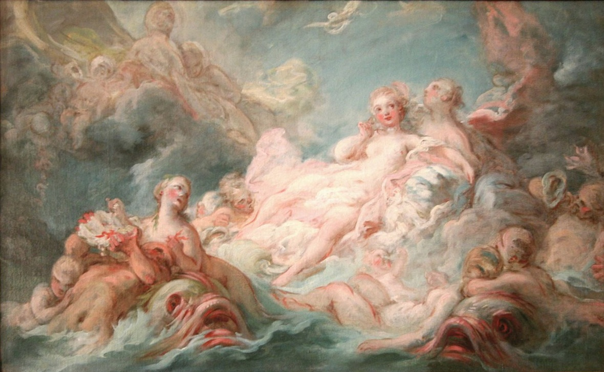

The Rococo Art Movement

The Beginnings of Rococo
In the early years of the 1700s, there was a shift toward a new style now known as Rococo.

The Palace of Versailles is a royal chateau that was once
the center of politcal power, located in Versailles, France (12 miles west
of Paris, France). The former residence of King Louis XIV, was
abandoned by the aristocracy, who once again took up residence
in Paris.
A shift away from the monarchy, toward the aristocracy characterizes the art of this
period.
France was the center of the development of Rococo.
In design,
the salon,
a room for entertaining but also impressing guests,
was a major innovation.
La Salon de la Princesse

Rococo salons are characterized by their elaborate detail,
intricate patterns, serpentine design work, asymmetry, and a
predisposition to lighter, pastel, and gold-based color palettes.
The most famous example was Charles-
Joseph Natoire and Germain Boffrand's La Salon de la Princesse
in the residence of the Prince and Princess de Soubise.
Asymmetrical curves, sometimes derived from organic forms, such as
seashells were elaborate and exaggerated.
Minimal emphasis was placed on architecture and maximum
emphasis on décor is essential to the Rococo movement.
Jean-Honore Fragonard
The Swing
Fragonard symbolizes ideas of infidelity, desire,
eroticism, love, and power.